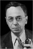

ARTHUR SCHLESINGER
Arthur Schlesinger (15 Ekim 1917'de doğdu ve 28 Şubat 2007'de öldü) yirminci yüzyılın en büyük Amerikan tarihçilerinden biriydi. Kimi zaman kalemi sert bir köşe yazarı olan Andrew Jackson, Franklin D. Roosevelt, John F. Kennedy ve Robert Kennedy gibi devlet adamlarının politikasını analiz etti. Gözlemci ama aynı zamanda politik yaşamın aktörü olarak, özel danışman sıfatıyla Başkan John F. Kennedy'nin çevresinde yer aldı. Tavırları nedeniyle ilerici kabul edilen Arthur Schlesinger, John F. Kennedy'nin politik düşüncesinin ve "Büyük Toplum"un sesi olarak görüldü. Richard Nixon'la ilgili olarak "emperyal başkanlık" terimini de ona borçluyuz. Ohio'da, Colombus şehrinde doğan Arthur, ünlü bir tarihçi olan Arthur M. Schlesinger'in oğludur. Harvard'daki öğreniminin ardından 1942-1945 arasında Askeri Enformasyon ve Stratejik Hizmetler subayı olarak görev yapar. 1946-1961 arasında Harvard Üniversitesi'nde tarih profesörü olur. 1961 yılında American Academy of Arts and Letters'e kabul edilir. 1966 yılında City University of New York'a profesör olarak atanır. Arthur Schlesinger, Americans for Democratic Action örgütünün kurucularındandır. Başkanlık seçimleri sırasında Adlai Stevenson, John F. Kennedy, Robert Kennedy için söylevler yazar. 2005'ten itibaren The Huffington Post adlı süreli yayına katkıda bulunuyordu. Yirmi kadar eserin yazarı olarak birçok ödül aldı: 1946 yılında The Age of Jackson için Pulitzer Ödülü; 1965'te A Tousand day için National Book Award. 1966 yılında, Kennedy idaresinde geçirdiği günlerin anlatısı olan Les mille jours de Kennedy (Denoël) için yine Pulitzer Ödülü; Robert Kennedy et son temps (O. Orban) için National Book Award. 1998 yılında National Humanities Medal verilir.

SCHLESINGER
Arthur Schlesinger, Doğu ile Batı arasındaki ideolojik karşıtlığa son verildiğinden beri etnik ve dinsel gerilimlerin patlak vermesiyle karşı karşıyayız. Bu durum yalnızca Amerika Birleşik Devletleri'ni mi ilgilendiriyor yoksa dünyanın geri kalan kısımlarını da ilgilendirmekte mi?
Bir süre boyunca, çok eski dinsel, ırksal, dilsel antagonizmaların bir bölümü Soğuk Savaş tarafından gizlendi. Soğuk Savaş'ın sona ermesiyle birlikte bu antagonizmalar canlandılar, hatta kimi ülkelerde diğerlerinden daha kaygı verici bir canlanma yaşandı. Yugoslavya'nın yaşadığı kanlı dönem bu antagonizmaların hangi trajik uçlara varabileceğini gösterir. Bu antagonizmalar kimi ülkeleri bölecek kadar güçlüdür. Birçok insan dini nedenlerle öldürülüyor; tüm diğer gerekçelerden daha ağır basanı bu oluyor. Her Şeye Kadir Tanrı'nın iradesini gerçekleştirdiklerine inanan kişilerin baskın çıkardığı en büyük tehdit bu. Doğal olarak, Hristiyanlığın biricik karakteri, Abraham Lincoln'ün deyimiyle, son derece zaaflı ve hata işlemeye bunca yatkın fanilerin dikkatini kendilerini Her Şeye Kadir Tanrı'dan ayıran mesafeye çekebilme kapasitesinde yatmaktadır. Kadiri Mutlak Tanrı kendine özgü amaçların peşinde gider ve bu amaçları ayırt edebileceğini uman, düşünen her insan varlığı bağışlanamaz bir günah işlemiş olur ki bu kendini Kadiri Mutlak Tanrı'yla karıştırmaktır.
Etnik ve dinsel çatışmalar, Soğuk Savaş'ın ideolojik çatışmalarının yerini mi aldı?
Öyle gözüküyor. İdeolojik düzlemde demokrasi politik alanda zafer kazandı, pazar ekonomik alanda zafer kazandı ve eski komünistler joint-ventures [ortaklar, hempa] ise para kazanarak ve totaliter rejimdeki yozlaşmış alışkanlıklarını demokratik rejimlere taşıyarak hayatta kaldılar.
Amerika, iki yüzyıllık bir tarihin sonunda, ortak etnik temelleri olmayan birleşik bir politik ulus halini nasıl alabildi?
Amerika Birleşik Devletleri'nin bir avantajı var: Bu ulus ortak bir etnik temele dayanmıyor. Esasen Protestan ve Beyaz bir ülke olarak dinsel bir zeminde. Amerikan yurttaşlığı etnik terimlerle değil, anayasaya ve ülke yasalarına uymayla tanımlanıyor. Laurent Bellow gibi kimileri bunu sivil bir din olarak adlandırıyorlar ki bu bana yanlış bir tanım gibi geliyor, çünkü din doğaüstü nitelikte bir inancı içerir. Bununla birlikte, Amerika'nın sivil bir kültürü vardır ve herkes buna teorik olarak dahil olabilir, pratikte bu ilkelerle uyum içinde yaşamayı bilemesek de fark etmez, çünkü bu sözde "ortak pota" çok eşitsiz bir asimilasyon sağlamıştır. Örneğin uzun süre boyunca İrlandalılar bu "pota"dan dışlanmıştır, sonra İtalyanlar, ardından sıra Doğu Avrupalılara gelir, sonra Doğu Avrupa Yahudileri ve son olarak da Doğulular. Siyah azınlık da bu ülkeye kendi keyfince gelmemiştir ve köle ticareti Siyahların Amerikan toplumunun tam haklarına sahip üyesi statüsüne erişmesini kalıcı biçimde engellemişti. Bununla birlikte kesintili de olsa bazı ilerlemeler kaydettik: John Kennedy İrlandalı ilk başkan oldu, kimi politikacılar bunun üzerine bir Katoliğin başkan seçilip seçilemeyeceği sorusunu sordular, ama bugün bu anlamsız bir sorudur. Bir süre sonra, Beyaz Saray'a girme sırası bir Yahudi'nindir. 1964 yılında, Yahudi kökenli ve dinsel bakımdan piskoposluğa bağlı olan Barry Goldwater aday gösterilmişti. Bir süre sonra sıra bir kadına gelecektir. Kadınlar çoğunluk olabilecek, ezilen tek azınlıktır. Kadın başkanımız hiç olmadı. 1930'lu yıllarda Roosevelt ilk kez bir kadını hükümetine atadı. İyi bir yolda ilerliyoruz. Dışlamadan asimilasyona doğru hareket Amerikan tarihinin önemli temalarından biridir. Ben gençken, 1950'ye doğru, yani yarım yüzyıl önce, federal yüksek mahkemede siyah yargıçlar olması fikri, Siyah bir generalin genelkurmay başkanı olması, Virginia'da siyah bir vali, New-Orleans, Dallas, Charleston ya da Birmingham gibi güney şehirlerinde, hatta Chicago'da, New York'ta, Los Angeles, Detroit, Kansas City, Seattle'da Siyah belediye başkanları olması, bellibaşlı beyzbol şampiyonluklarında siyah oyuncuların olması hayal edilebilecek bir şey bile değildi. Robert Fros'tan alıntı yaparsam, birazcık uyuyabilmemiz için daha kilometrelerce yol kat etmemiz gerekir.
Amerikan kimliğini, uygarlığını tanımlamanız sizden istendi. Siz de Hector Saint-John de Grèvecœur'den, Amerikan insanını açıklayan bir Amerikan çiftçisinin ünlü mektubundan alıntı yaptınız. Onun bir yüzyıllık sorusuna hangi cevabı verirsiniz?
Tarihsel olarak Amerika Birleşik Devletleri'nin dilsel kökeni İngiliz ve Protestan'dır. Bu bizim kurumlarımızın potasıdır. Bununla birlikte, başka diller konuşan, başka dinlerde ibadette bulunan, başka kültürlere mensup insanların gelmesi bu temeli değiştirdi. Başka deyişle, asimilasyon karşılıklı bir süreçtir. Kişiler gelir, İngilizce öğrenir, İngiltere'den ithal edilen bir hukuk sisteminin ruhuna dahil olurlar, ama aynı zamanda kendilerini kabul eden kültürü dönüştürürler. Büyük Britanya ile Amerika Birleşik Devletleri arasında farklılık ortaya çıkmıştır elbette, bu farklılıklardan bazıları yeni gelenlerden kaynaklıdır, Amerikan kültürünün evrimine bağlıdır. Sosyolog Orlando Patterson, başka hiçbir ülkede halk sınıflarının Siyah Amerikalılar örneğinde olduğu gibi egemen kültürü değiştirip zenginleştirmediklerini ortaya koyar. The Desuniting of America'da (Amerikan Birliğinin Bozulması) yazar etnik, ırksal ve dinsel cemaatleri sürdürmek ve ayırmak isteğinin tehlikesini vurguluyordu. Böylece asimilasyonu, entegrasyonu savunuyordu ve Amerikan toplumunun en temsil edici istatistiklerinden biri dinsel, etnik ve ırksal bariyerleri aşan evliliklerin yayıldığına işaret etmektedir. Günümüzde, Japon-Amerikalılar, Japon-Amerikalılardan çok Avrupa kökenli Amerikalılarla evlenmektedirler. Aynı şekilde, birçok Amerikan Yahudisi Yahudi olmayanlarla evlenmektedir, öyle ki kimileri Amerika Birleşik Devletleri'nde Yahudi cemaatinin varlığından ya da gelecekte yok olmasından kaygı duymaktadırlar. Uzun süre boyunca Siyahlarla Beyazlar arasındaki Katolik evlilikleri birçok eyalette yasadışıydı. Elli yıl sonra, bir kuşak boyunca bu rakam dört misli arttı: Bana göre, aşk ve cinsellik Amerikan birliğinin dağılmasını arzulayanları yenecektir.
Uzayın fethi "yeni hudut" olarak tanımlandı, Amerika içi hudut hukuksal olarak on dokuzuncu yüzyıl sonunda yok oldu. Frederick Jackson Turner "hudut"un Amerikan kimliğindeki belirleyici rolünü analiz etti. Yeni hudutlar arayan bir Amerika fikri başka hiçbir demokraside görülmez; Arjantin, Avusturalya ya da Kanada gibi eski sömürge ya da dominyonlarda bile yoktur, ki bunlar da sömürgeciliğe açık geniş toprak parçalarına sahiptirler.
Beş yüz yıl sonra insanların aklında yirminci yüzyıldan geriye ne kalacaktır? Soğuk Savaş, İkinci Dünya Savaşı yoldan saptıran olaylardır, tıpkı çağdaşlarımızın gözünde Otuz Yıl Savaşları ya da on yedinci yüzyıl insanı için Yüz Yıl Savaşları gibi. Buna karşılık, yirminci yüzyıl uzayın keşfine başlamak için insanın yeryüzüyle bağlarının koptuğu yüzyıl olarak kalacaktır. Ben Jules Verne ve H. G. Welles okuyarak eğitildim, ama yaşamım boyunca Ay'ın üzerinde yürüyen bir adam asla düşünmedim.
Amerikalıların çoğu etnik bir bakış açısından kendilerini tanımlıyorlarsa, ekonomi tarihi düzleminde olduğu gibi, Amerikan tarihinin yorumlayıcı sınırları nerededir?
Amerikalıların çoğunun kendilerini herhangi bir etnik gruba bağlı olarak tanımladıklarını düşünmüyorum, çünkü hepsi de etnik yapılar arası evliliklerin ürünüdür. Bu evliliklerin oranı, bu değerlendirmeyi güçleştirecek düzeydedir: İtalyan bir baba ile Yahudi bir anne ya da Anglosakson bir anne ile Siyah bir baba olabilir. Bütün Amerikalılar bu karışımların ürünüdür, öyle ki cemaatler arasındaki ayrımın etnik karakterine vurgu yapmak çok yapay gelebilir. İkinci Dünya Savaşı'ndan sonra, "etniklik" kültü evresinden geçtik; bu fikirlerin savunucusu bazı ideologlar, belli bir noktaya kadar politikacı olarak, etnik karta oynadılar. İnsanların çeşitliliği bu ülke için büyük bir zenginlik kaynağıdır, Çin, İtalyan ya da Fransız mutfağıyla karşılaştırılabilir. Bütün Amerikan şehirlerinde muhtemelen bir Chinatown ve bir Little Italy vardır, hatta bir Yorkville bile vardır, İkinci Dünya Savaşı sırasında dağılmış olan bir Alman-Amerikan cemaati vardır ve bu çeşitlilik de olumludur. Buna karşılık, dilsel, dinsel, etnik bir soykırım nosyonu Amerika'nın özüne aykırıdır ve aykırı kalacaktır.
Amerika yirmi birinci yüzyılda temel bir yer işgal edecek midir, dünya uygarlığı içindeki rolü ne olacaktır?
Amerika Birleşik Devletleri liderliğinin, "tek başımıza hedeflerimizden hiçbirine erişemeyiz" fikrini benimseyeceğini umarım. Bizim ekonomik ve askeri süpergüç olarak konumumuz geçicidir. Dünyada arzuladığımız şeylerin çoğu, başka ülkelerin işbirliğini gerektirir. Amerika Birleşik Devletleri'nin Birleşmiş Milletler'e borçlu olduğu para günümüz dünyasının büyük skandallarından biridir. Kuşkusuz ki, Birleşmiş Milletler Örgütü kusurlu bir yapıdır, ama gezegen çapındaki tek araç olduğundan tüm desteğimizi hak eder.
Tocqueville aristokratik bir çevreden geliyordu. Yeni bir demokrasinin, yeni bir çağın başında dünyaya gelmişti. Amerika'yı gözlemledi ve politikada, dinde, felsefede ve toplumsal yaşamda Amerikan kültürel tarihinin çok sayıda olayını ve gelecekteki özelliğini öngörebildi. Söylediklerinden neler geçerli kaldı, hangi konuda yanıldı?
Tocqueville'in Amerikan demokrasisi üzerine hemen hemen tüm gözlemleri doğruluklarını korumaktadır. Kimi yanlış öngörülerde bulunma riskini de göze almıştır, bir ırksal savaş öngörüsü yanlıştı, ama gelecekteki ırksal gerilim kavrayışı tamamen doğru çıkmıştır. Tocqueville bu ülkeye yüz altmış yıl önce geldi, o zaman nüfusu on iki, on üç milyondu ve yine de bizim tanıdığımız iki yüz yetmiş milyonluk Amerikan ulusuyla bağı bir Amerikan kimliğinin kalıcılığını, sürekliliğini kanıtlamaya yeter. Tocqueville kendisinden elli yıl sonraki basında meydana gelen dönüşümleri ya da Amerikan politik partileriyle ilgili dönüşümleri görmemişse de onlardaki disiplinsizliği hemen fark etmişti. Amerikan politikacısının, kongredeki Amerikan yasamacısının kendi partisinden çok seçmenlerine bağlı olduğunu yazmıştı. Bu durum, parti sisteminde daha fazla disipline alışmış olan Avrupalıları şaşırtmaya devam eden Amerikan politikasının birçok yönünü açıklamaktadır. Avrupa'da birleşme özgürlüğü, eyaletlerin özerkliği, basın özgürlüğü yenilmişti ve Tocqueville bütün bunların özgürlüğün temel öğeleri olduğunu düşünüyordu.
Aynı zamanda Tocqueville Amerika'ya özgü bir felsefenin yokluğu üzerinde de durdu. Bir Amerikan felsefesi varsa –der– bu, pragmatizme, mantıksal ampirizme yöneliktir. Amerikan düşünce, değer ve kültür tarihinin, Amerikan felsefesi tarihinde yansıdığı ölçüde, herhangi bir transendantal ya da metafizik etkide bulunduğu kanısında mısınız? Emerson'un transendantalizmi bile döneminin toplumsal politikalarının ve New-England'daki ütopik toplumsal cemaatlerin kimi deneyimlerinin içinde mevcuttu. Latin Amerika'da düşünce ve felsefe tarihi kaynağını on sekizinci ve on dokuzuncu yüzyılın bütün klasik deneyiminden alır ve bu da tamamen metafizik, tinsel ve transendantaldır, en ufak bir ampirik olguyla alakası yoktur. Latin Amerika'da pragmatik bir şey yoktur –ne Wittgenstein, ne sosyal Darwincilik, ne George Herbert Mead, ne Herbert Spencer– son derece sezgiseldir. Bergson'u, varoluşçu geleneği kabul eder, ama mantıksal tözcülük ya da analitik ampirizm hiç yoktur. Kuzey Amerika, özgün sesini veren John Dewey William James'in ya da Charles Peirce'ın bütün pragmatik felsefe geleneğiyle birlikte, Latin Amerika karşısında bir dikotomiyi temsil eder. Tocqueville, düşünce ve felsefe tarihine Kuzey Amerika kültürünün bu tözsel katkısını ilk kavrayan olur.
Gerçekten de, Latin Amerika'da soyutlamaya duyulan hayranlık bir felakettir. Uluslararası kolokyumlarda bir Latin Amerikalı söz aldığında, zamanın dörtte üçünün soyut ve anlamdan yoksun retorikle geçeceği bilinir; bir geleneğin meyvesidir bu. Bizim de metafizik kaygılarımız vardır ama bunlar özellikle Amerika Birleşik Devletleri'nde güçlü bir gelenek olan teolojik biçimde ifade bulurlar. Bağımsızlıktan önce sömürge kültürünün ikiliği, bir yanda büyük teolog Jonathan Edwards aracılığıyla ve diğer yanda kâşif, bilim adamı, pratik insan Benjamin Franklin aracılığıyla ifade bulmuştur. Goethe Almanya'dan, aynı kalbin içindeki iki ruh diye söz ediyordu. Edward ve Franklin Amerika'nın kalbindeki iki ruhtu. O zamandan beri Edwards, Billy Graham tarzında kaba bir vaizci düzeyine indirgendi. Bununla birlikte, yüzyılın en etkili Amerikalı teoloğu Reinhold Niebuhr, Jonathan Edwards'la aynı kategoridendir. William James'in kayda değer çalışması, Benjamin Franklin'in yaşam anlayışını sistematikleştirerek pragmatizmi bir felsefe haline getirmekten ibarettir. Böylece pragmatizm kısmen kişisel deneyimden kısmen de psikolojinin ilkelerinden yola çıkarak doğmuştur. William James psikolog olarak işe başlamıştır, Psikolojinin İlkeleri adlı kitabı hâlâ psikolojinin temel eseridir. Ayrıca Emersoncu gelenekten de çok yararlanmıştır. Emerson'un transendantalizminden değil, Emerson'da bana en ilginç gelen şeyden, ama onun daha karanlık yanı, kader ve tarih üzerine denemelerinde görülen, özellikle insan doğası üzerine ifade ettiği ve Nietzsche'nin bayılacağı çok keskin gözlemlerden yararlanmıştır. Ayrıca, James'in babası Emerson'un dostuydu, o da bu atmosferde büyüdü. Son olarak, William James olağanüstü bir yazardı. Henry James hakkında romanlarını psikolog olarak yazdığını söylüyordu, kendisi de psikoloji eserlerini romancı gibi yazıyordu. Charles Peirce'ye gelince, bir anlamda James'ten daha özgün bir zekâydı. James son derece cömert biriydi: Peirce kendine bir iş bulamazken, James onu yıllarca mali bakımdan destekledi.
Yani Amerikan kültürünün özgün bir metafizik boyut geliştirdiği kanısında mısınız?
Özgün bir teolojik boyut demek gerek. Hegelci felaketten kendimizi koruduk. William James'in Hegelcilik üzerine denemesi Hegel'in etkisinin mükemmel bir reddidir. Biz, Hume'un, Locke'un etkisiyle ampirik geleneğe dahiliz.
Size göre Amerikan kimliği asla donmadı, daima hareket halinde. Bu sonsuz bir süreç midir, nereye götürebilir?
Tocqueville günümüz Amerika'sına dönebilse kendi kitabındaki ülkeyi ve Amerikan kimliğindeki belli bir sürekliliği tanır. Dışlamadan asimilasyona adım adım geçiş bu kimliği sürdürdü, zenginleştirdi, dönüştürdü, öyle ki yalnızca Fransız, İtalyan, Çin, Hint ya da Japon mutfağını içimize katmakla yetinmedik, aynı zamanda tuhaf olduğu kadar egzantrik de olan bir yığın soyadı da aldık. Eski geleneksel İngiliz adlarına politik dünyada, gösteri sanatlarında, edebiyatta, kiliselerde giderek daha az rastlanmaktadır. Kaynaşma potasının nihayet işlemeye başlaması epey zaman aldı.
Size göre –on dokuzuncu yüzyılda Filipinler'de, Monroe Doktriniyle birlikte Latin Amerika'da, Çin'de, Küba'da, yüzyıllardan beri Amerika'nın dış politikasına damgasını vurmuş olan– Mesihçilik Amerika'da Avrupa'dan daha mı güçlüdür?
Retorik Mesihçiliktir bu. Amerika dünya için bir örnektir ama dünyaya müdahale etmeyecektir. Sorun her türlü müdahalenin yarattığı direnişlere bağlıdır: Altı Amerikalı öldürüldü, Kongre'de ve ülkede yuhalamalar ve Amerikan birliklerinin geri çekilmesi. Retorik düzlemde her şeye hazırız, ama, heyhat, pratikte, bu askerlerimizin ölümü anlamına geliyor. Mikroptan arındırılmış niteliği nedeniyle hava savaşına tapıyoruz: havalanıyor, birkaç düğmeye basılıyor, yere iniliyor, güzel bir sofrada bir kadeh bir şey içiliyor.
Dünya ekonomisinin hâlâ bir etiği var mı?
Açgözlülük insanın her zaman çok güçlü saiklerinden biri oldu. Güney Amerika'da rahipler köleliği savunurken, oyunu ya da dansı günah olarak görüyorlardı. Kendi kendini tatmin her zaman en korkunç günahlardan biridir, en eski zamanlarda da bugün de. Kimi insanlar, başkaları hakkında yargılarda bulunarak dünyayı arşınlıyorlar. İş dünyası etik ve ahlak yanlısı ama aslında bu para kazanmaya yönelik, mal ve yenilik üretmeye yönelik bir alet yalnızca, çok yıkıcı olduğu da ortaya çıkabilir. Pazar bu hedefler doğrultusunda değerlendirilebilir. Yaratıcı yıkıcılık kapitalist sürecin parçasıdır, kapitalizm zayıf ve savunmasız insanlara saldırdığında bu yıkıcı kapasiteyi sınırlandırmak için elimizden geleni yapsak bile bu böyle.
Liberal ekonominin, yüzyıllardan beri tamamen farklı kültürel geleneklere sahip Madagaskar ya da Peru gibi kültürlere yerleşmesinin, bu ülkelerin dinsel ve kültürel kimliklerini yitirmelerine yol açacağını düşünüyor musunuz?
Hayat değişim dolu, tarihi donduramayız. Marx, Hindistan'dan söz ederken, Britanya'nın suçlarına ve İtalyanların talanlarına rağmen, sömürgeleştirmenin alt-kıtayı Asyatik durgunluktan uyandırdığını, motorlar, lokomotifler, demiryolları yapmaya, modern bir ticarete sahip olmaya yönelttiğini belirtir. Bir anlamda, bütün bunlar kaçınılmaz ve Batı'dan ne alıp ne almayacağına karar vermek Hindistan'a düşer, çünkü kimse ona bir şey dayatamaz, kimse bu iktidarı elinde tutamaz.
Modern medya teknolojisi, ki bunun önde gelen örneklerinden biri CNN'dir, Ekvator ya da Kolombiya sakinlerini kendi politik çevreleri üzerine bilgiyi CNN'in merkezi olan Atlanta'dan almak zorunda bırakıyor. Bu tehlikeyi önlemek için, kültürlerin çokluğu içinde kaynakların çokluğunu sağlayan enformasyon merkezlerini tüm dünyada artırmak gerekmez mi?
Bence çok daha ciddi başka tehlikeler mevcut. İnsanlar neyi dinlemek istiyorlarsa onu dinlerler. Bundan ne kötülük olabilir? Hollywood'a direnmek istiyorlarsa, Hollywood'a dirensinler. İnsanların tercih özgürlüğünü kısıtlamak için hiçbir şey yapmayacağım.
Kendinizi pazara mı teslim ediyorsunuz?
İnsanileşmiş bir pazara inandığımı anladınız. Demokrasinin büyük gücü kendini düzeltme kapasitesinde yatmaktadır. Sağlıklı bir demokraside çok sert, çok kötü niyetli, çok yıkıcı biri çıkarsa ortaya bir ıslah hareketi gelişir. Kendi kendini düzelten bu süreçler aşırılık karşısında daima görülür.
Yeni yüzyıl için dileğiniz nedir?
Katliamların sona ereceğini umuyorum. Uluslararası kurumların gelişmesinin insanların yakınlaşmasını sağlayacağını ve insani amaçlar için birlikte çalışılacağını umuyorum. Ama dünya çapında bir hükümet ummuyorum, bu bir felaket olur.